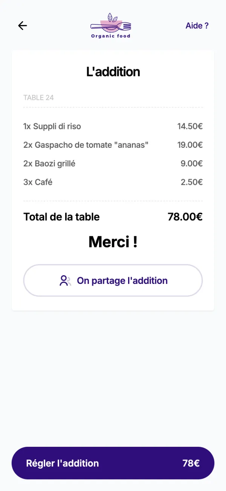
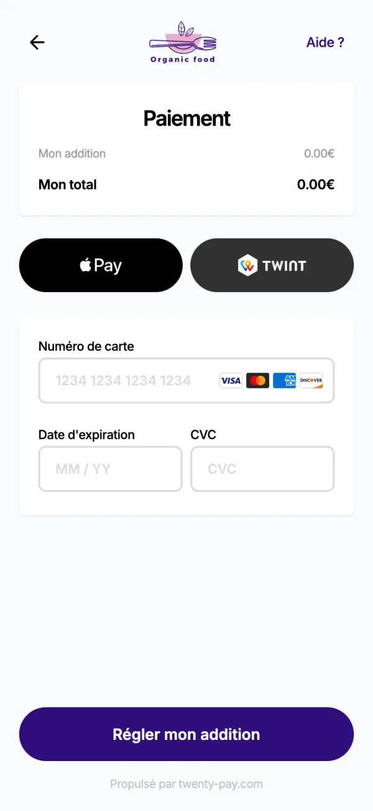

프리랜서 · 웹 서비스 및 홍보 사이트
Dotworld
한 클라이언트를 위한 세 가지 제품입니다. 이력서를 만드는 사이트, 레스토랑에서 계산하는 앱, 그리고 구독을 해지하는 서비스입니다.


배경
한 클라이언트, 세 개의 프로젝트
Dotworld는 스위스 로잔에 있는 회사로, 여러 웹 서비스를 선보이고 있습니다. 2021년 3월, 프리랜서 활동을 시작하면서 함께 일하게 되었습니다.
CV Ninja(온라인 이력서 작성), Twenty Pay(레스토랑 계산), Rezilli(구독 해지) 작업에 참여했습니다.
제 역할은 디자인 시안을 바탕으로 데스크톱과 모바일에 맞는 반응형 UI를 구현하는 것이었습니다. Vue.js 또는 Nuxt.js와 Tailwind.css를 사용했습니다.
CV Ninja · 2021
온라인 이력서 작성
단계별로 이력서를 작성하고, 템플릿을 골라 다운로드할 수 있는 사이트입니다.
- 템플릿이력서 템플릿 5종(Bordeaux, Lyon, Nantes, Nice, Toulouse): 디자인 시안을 바탕으로 퍼블리싱, 색상 변형, 마무리 작업. 이름 길이에 따라 글자 크기 조정, 긴 이메일 주소 줄바꿈 처리
- 사이트사이트 나머지 부분 일부 수정
모든 템플릿에 같은 가상 이력서를 넣어 로컬 환경에서 표시했습니다. 이력서를 클릭하면 확대됩니다.
Twenty Pay · 2021 – 2022
레스토랑에서 계산하기
테이블의 QR 코드를 스캔하면 계산서를 확인하고 휴대폰으로 결제할 수 있습니다.
- 앱사용자 흐름 화면: 메뉴, 요리, 주문 요약, 계산서 나누기, 결제, 리뷰, 감사 화면
- 사이트레스토랑용 홍보 사이트: 영상이 포함된 데모 섹션, 장점, 리뷰, FAQ, 문의 섹션 / 고정 메뉴, 모바일 대응, 법적 고지 페이지
앱



앱: 레스토랑 홈, 계산서, 나누기, 결제
홍보 사이트
Rezilli · 2021 – 2022
구독 해지
계약이나 구독의 해지 통지서를 작성하고 발송해 주는 온라인 서비스입니다.
- 퍼블리싱디자인 퍼블리싱: 폼(애니메이션 라벨, 필수 입력 항목), 모바일 드롭다운 메뉴가 있는 정보 페이지, 카테고리·서비스별 필터, FAQ, 팝업 창
메인 페이지
폼과 라이브러리
로컬 환경에서 샘플 데이터로 캡처했습니다.
배운 점
실제 데이터를 고려한 퍼블리싱
CV Ninja 이력서 템플릿은 아주 긴 이름이나 넘치는 이메일 주소처럼 어떤 내용이 들어가도 레이아웃이 유지되어야 했습니다. 이 작업을 통해 시안만이 아니라 실제 데이터를 고려해 퍼블리싱하는 법을 배웠습니다.